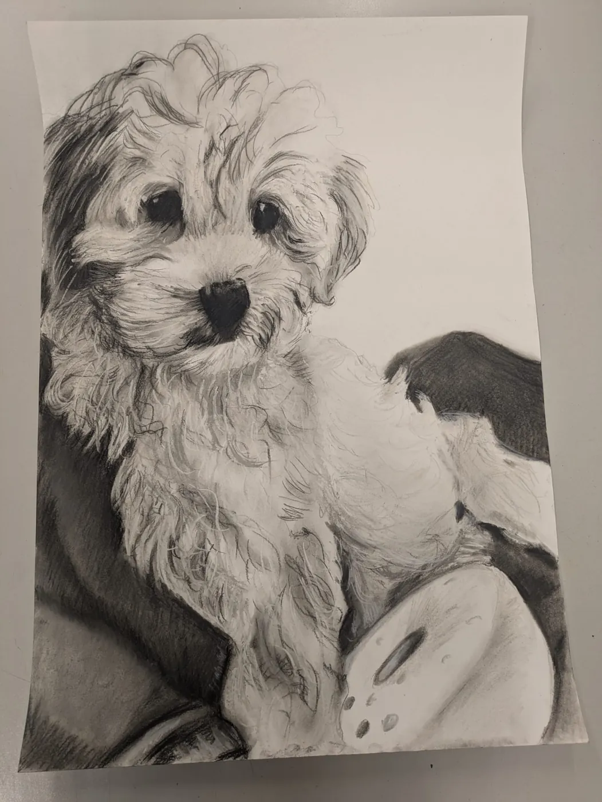
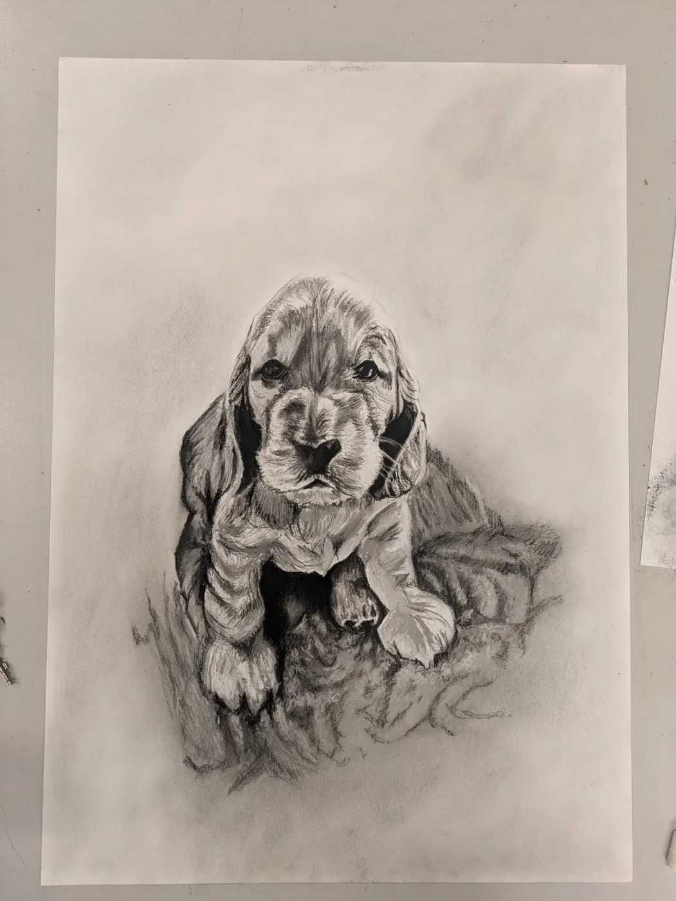

Commissions
Portrait Commissions - Charcoal & Graphite, Suffolk
A commissioned portrait is unlike any other gift.
Commissions
A commissioned portrait is unlike any other gift.
The Process
Send a message with your idea. Every commission starts with a conversation.
We'll discuss size, medium, composition, and timeline. I'll walk you through the options.
I'll share progress photos along the way. Each portrait takes between two and six weeks.
Your finished artwork is carefully packaged and shipped to your door. I deliver across Suffolk and ship anywhere in the UK.
Investment
From £150
Single subject, head and shoulders. Charcoal or graphite on quality cartridge paper.
From £250
Single or double subject with more detail and presence. The most popular size.
From £400
A2 and above, full figure studies, or complex compositions. Priced per project.
Previous Work


.webp)
Questions
Each portrait takes between two and six weeks from agreement to delivery, depending on size and complexity. I share progress photos along the way so there are no surprises.
A4 portraits start from £150 (single subject, head and shoulders). A3 portraits start from £250 and are the most popular size. Larger work - A2 and above, full figure studies, or complex compositions - starts from £400 and is priced per project.
A clear, well-lit photograph of the subject is ideal - natural light, sharp focus, and a resolution high enough to see detail in the eyes and hands. I'll talk you through composition and pose options before any work begins.
Often, yes. Many commissions are memorial pieces drawn from old or imperfect photos. I'll review what you have and tell you honestly whether I can do the subject justice - and sometimes a combination of two or three reference images is the answer.
Portraits ship unframed by default, carefully packaged flat for safe transit and so you can choose a frame that suits your home. I'm happy to recommend framers if you'd like.
Yes. I deliver in person across Suffolk where possible and ship anywhere in the UK. Get in touch about international shipping if you're further afield - it's usually possible.